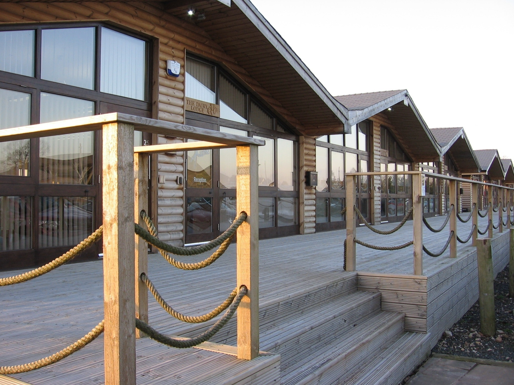

Serviced
Serviced offices
Move in and start working. Fully networked space with the infrastructure, support and facilities already in place.
Read more
Near Stafford & Penkridge · Staffordshire
A 25-acre rural business park built around restored 19th-century barns and timber lodges, with a working community of businesses, an on-site restaurant, and the M6 just over a mile away.
The Village
Most office parks are grey boxes off a ring road. Dunston is different: eight character buildings dating from the 1800s, carefully restored and set around landscaped courtyards, with timber log cabins added since and open Staffordshire countryside on the doorstep.
It's home to a broad mix of businesses, among them financial planners, engineers, ecologists, recruiters, creative studios and an independent school. Space is flexible, with managed, serviced and leased options to suit a first office or a satellite site.
Managed, serviced & leased options
365 days a year
Leased lines & on-site IT support
From 6 to 40+ delegates


The entrance fountain and landscaped surrounds set the tone before anyone reaches your door. It's the kind of first impression that's hard to get in a standard office block.
Workspace
From a single desk in a log cabin to a 10,000 sq ft floor plate, or a professional address without the desk at all.
Serviced
Move in and start working. Fully networked space with the infrastructure, support and facilities already in place.
Read moreManaged & leased
Longer-term space on your own terms, furnished or unfurnished, with DBV handling the building around you.
Read moreVirtual
A business address, mail handling and call answering, with meeting rooms on site when you need them.
Read moreBy the hour
Three bookable rooms from one-to-ones up to 40+ delegates, with catering available and a covered walk to the restaurant.
Read moreBusiness Directory
More than a hundred businesses are based at or registered with Dunston Business Village. Search by name, service or building.


On Site
A proper café and restaurant at the heart of the village. Somewhere to meet clients, feed a team, or step away from the desk without leaving site. Nominated for the Good Food Guide.
Find Us
On the A449 between Penkridge and Stafford, with its own access into the site.
1.2 miles from M6 Junction 13 and under five minutes from the M6 Toll.
Penkridge station is 1.5 miles away, 7 minutes from Stafford and 10 from Wolverhampton.
Two stops within 300 yards, roughly every 30 minutes.
Woodland Lodge, South Courtyard
Stafford Road, Dunston
Staffordshire, ST18 9FJ